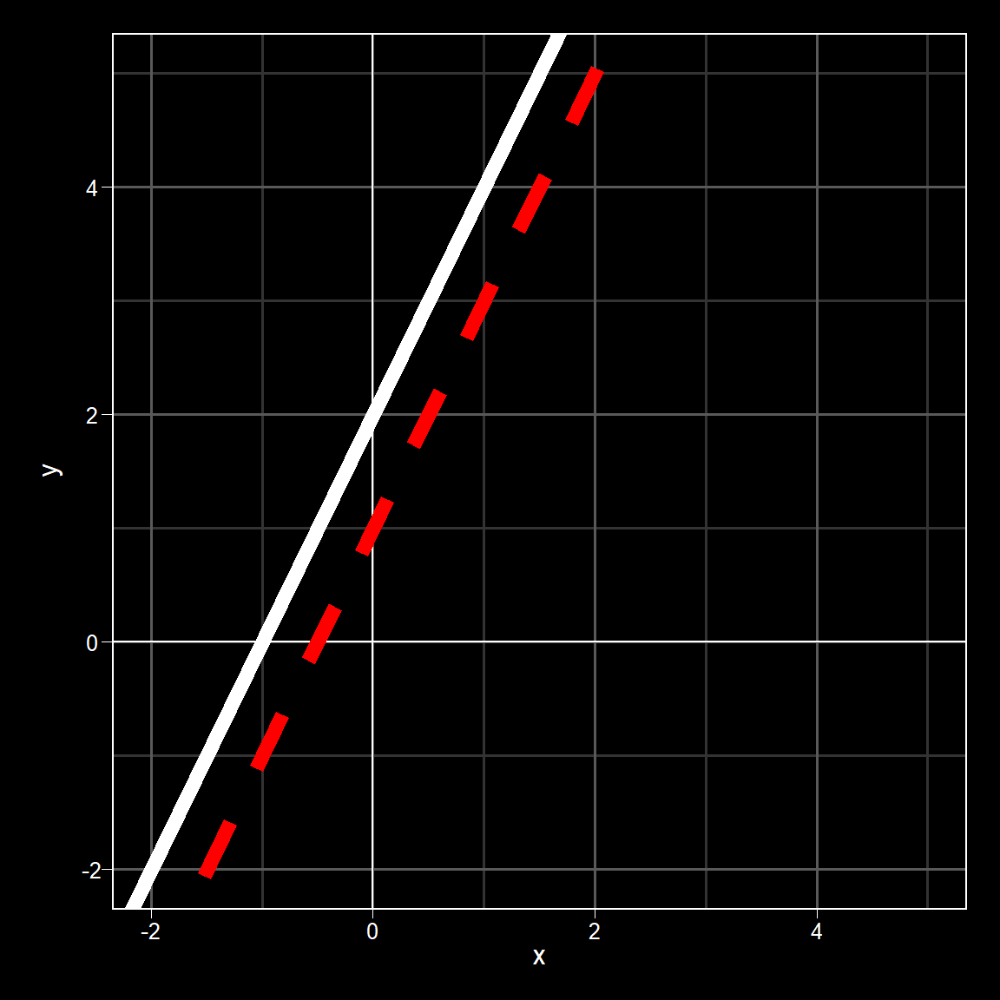
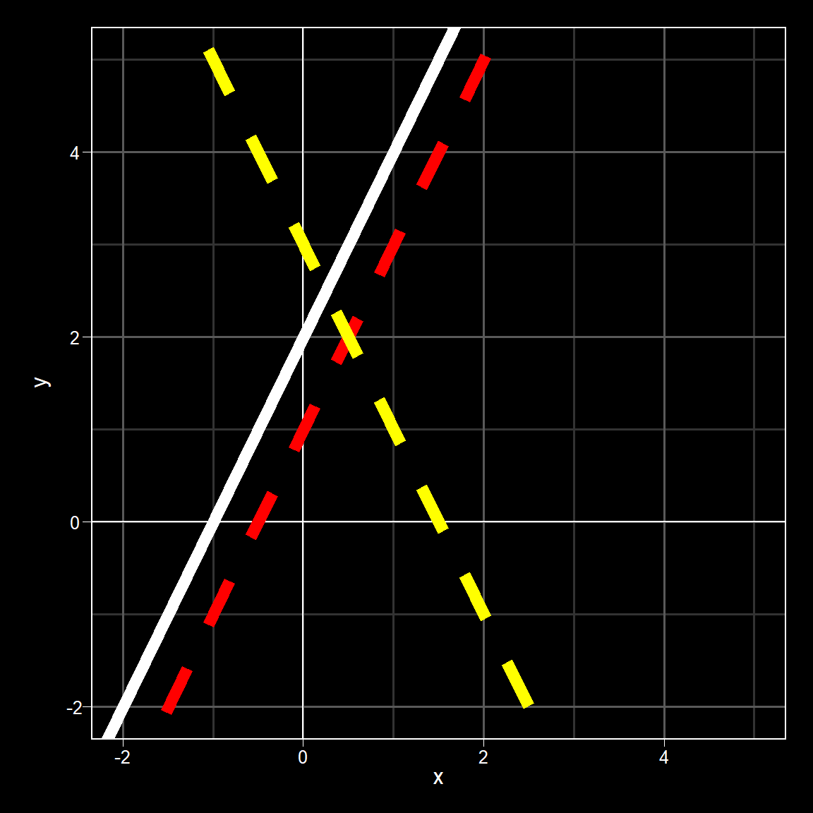
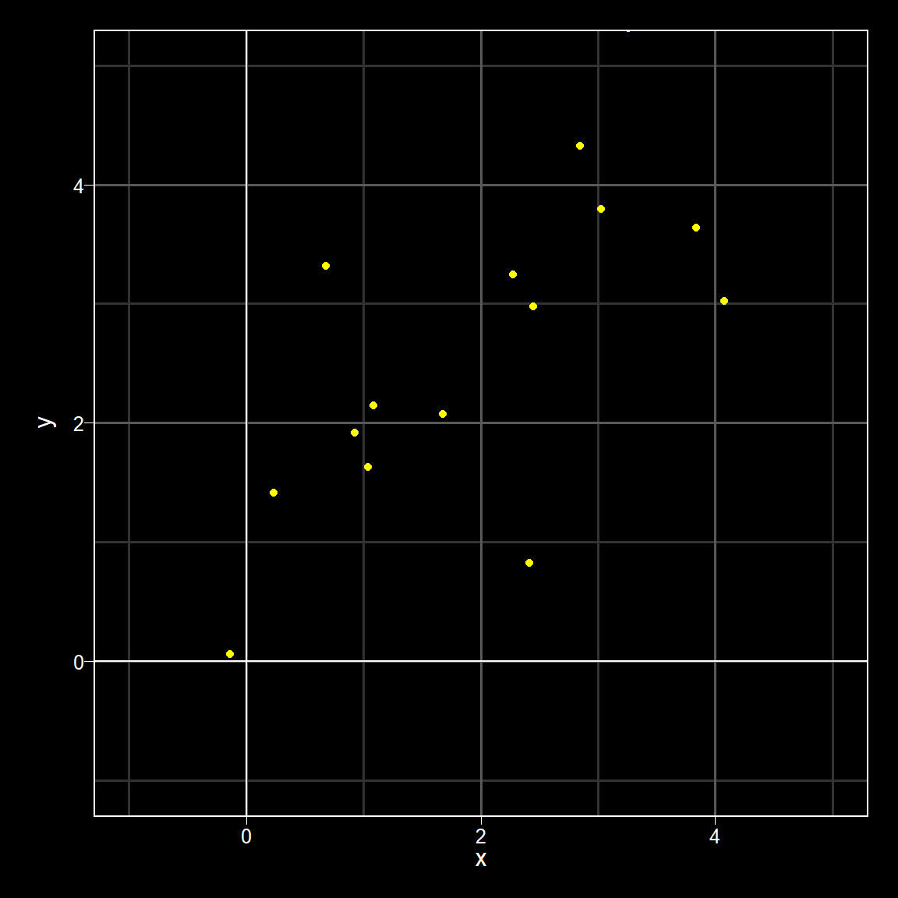

Statistical Models
Lecture 2 - Correlation and Regression (Review)
Part 1: Statistical Models
| lecture | topic |
|---|---|
| 1 | introduction |
| 2 | correlation & regression |
| 3 | multiple regression |
| 4 | interactions |
| 5 | multilevel models |
This Week
- Notation
- Correlation
- Regression
Hopefully most will feel like review but with a few more formulas to look at!
Notation
Lost in Notation - Terms
univariate: one variable of interest (t-test, regression)
bivariate: two variables of interest (correlation)
multivariate: more than two variables of interest (mediation, path analysis)
single-level: one observation (data point) per participant (or unit of measurement) - e.g. an average reaction time across all trials
multi-level: more than one observation per unit of measurement - e.g. reaction time on each trial
Lost in Notation - Statistics
- Latin alphabet: observed variables associated with the sample (“statistics”)
- \(X\), \(Y\), \(r\), etc
- i.e. the values that you have actually measured through some process of research on your sample - e.g. data collection
Lost in Notation - Statistics
- Greek alphabet: unobserved variables associated with the population (“parameters”)
- \(\beta\) (beta), \(\sigma\) (sigma), \(\rho\) (rho)
- the values that you can’t measure but want to say something about in your population
Lost in Notation - Statistics
- Estimated parameter value: values that you are making some inference about in the population based on the sample values
- often shown as Greek letters with little party hats on, \(\hat{}\)
- \(\hat{\beta}\) (beta hat), \(\hat{\sigma}\) (sigma hat), \(\hat{\rho}\) (rho hat)
- Summation notation (capital “sigma”)
- \(\Sigma X\) : add up all \(X\) values
- Note: the word sigma and sign for sigma appears as other concepts as well but will point this out when it happens
Lost in Notation - Univariate Stats
mean (\(\mu\), \(\bar{X}\)): \(\bar{X} = \frac{\Sigma X}{N}\)
- \(\mu\) (mu) - population mean; \(\bar{X}\) (x-bar) - sample mean
- Sum up all the values of X (\(\Sigma X\)) and divide by the number of data points (N)
- A point estimate that locates your data in a space
Lost in Notation - Univariate Stats
deviation score: \(X - \bar{X}\)
- A measure of how far a point is from a reference point.
- In this case how far X is from the mean (\(\bar X\))
- If IQ has a mean of 100,
- then a person with an IQ of 90 has a deviation score of -10 (90-100 = -10),
- and a person with an IQ of 115 has a deviation score of 15 (115-100 = 15)
Lost in Notation - Univariate Stats
\(z\)-score:
\(z = \frac{X - \bar{X}}{S_X}\)
- A standardised deviation score that converts data to the Normal Distribution
- X minus the mean (\(\bar X\)), divided by the standard deviation (SD) of X (\(S_x\))
- \(S_X\) - sample SD and \(\sigma_x\) - population SD
- Z = 1 means 1SD above the mean; Z = -2 means 2SD below the mean.
Lost in Notation - Univariate Stats
standard deviation (\(\sigma\), \(S\)):1 \[S = \sqrt{\frac{\Sigma \left(X - \bar{X}\right)\left(X - \bar{X}\right)}{N}}\]
- Measure of the average spread of the data around the mean. Large SD means widespread data. Small SD means all data relatively similar.
- Is based on deviation scores as you can see from formula
Lost in Notation - Univariate Stats
variance (\({\sigma}^2\), \({S}^2\)): \[{S}^2 = \frac{\Sigma \left(X - \bar{X}\right)\left(X - \bar{X}\right)}{N}\]
- Similar to SD is a measure of the overall spread but in squared units.
Relationship between variance and SD
- Square root of variance is the standard deviation
- The square of the standard deviation is the variance
Correlation & Bivariate Data
bivariate data
- scatterplot: a two-dimensional figure (x and y) representing the relationship in bivariate data (i.e. the relationship between two variables)
- App on left can be used to highlight the effect of:
- Changing the mean of either variable (moves location in space) - slide \(\mu\) lines
- Changing the standard deviation of either variable (affecting the spread) - slide \(\sigma\) lines
- Changing the correlation between the two variables - slide \(\rho\) lines
bivariate data
covariance (\(cov_{XY}\)): \[cov_{XY} = \frac{\Sigma \left(X - \bar{X}\right)\left(Y - \bar{Y}\right)}{N}\]
- The relationship between the deviation scores in X and the deviation scores in Y
- sum of the deviations in X multiplied by the deviation in Y, all divided by N.
- if X is bigger than its mean and Y is bigger than its mean (or they are both smaller than their means) then you likely to have a high covariance
- if sometimes X is bigger and Y is smaller (than their means) and vice versa, covariance will be low.
- covariance is dependent on the scales you measure in so we standardise to give the correlation
bivariate data
correlation (\(\rho_{XY}\), \(r_{XY}\)) \[r_{XY} = \frac{cov_{XY}}{S_X S_Y} = \frac{\Sigma z_x z_y}{N}\]
- Standardised measure of covariance so the values are limited to between 1 and -1
- Correlation is the covariance of X and Y, divided by the standard deviation of X times the standard deviation of Y
- Can also be established through Z scores
bivariate data
Relationship between covariance, correlation and SD
\[r_{XY} = \frac{cov_{XY}}{S_X S_Y} = \frac{\Sigma z_x z_y}{N}\] \[cov_{XY} = r_{XY} S_X S_Y \text{ or } \rho_{XY} \sigma_X \sigma_Y\]
- Covariance can be calculated by multiplying the correlation of X and Y with the SD of X and the SD of Y
- if you know the three out of four of the covariance, the correlation and the two standard deviations (or variances), you can calculate the fourth.
correlation coefficient
Typicaly denoted as \(\rho\) (Greek symbol ‘rho’) or \(r\)
\(-1 \ge r \le 1\)
- \(r > 0\): positive relationship
- \(r < 0\): negative relationship
- \(r = 0\): no relationship
Estimated using Pearson or Spearman (rank) method
cor(),cor.test(),corrr::correlate()
covariance matrices & simulation
We mentioned that at times we will use models to simulate data:
- In order to simulate bivariate data you need to know five values:
- the correlation (\(\rho_{xy}\))
- the standard deviation of X (\(\sigma_x\))
- the standard deviation of Y (\(\sigma_y\))
- the mean of X (\(\mu_x\))
- the mean of Y (\(\mu_y\))
- Formula shown in “math” tab but we won’t ever do this by hand. We will need to understand covariance matrices going forward so….
Covariance Matrix
- A matrix is a dimensional structure/table with values arranged in rows and columns
- covariance matrix is (annoyingly) symbolised often as \(\Sigma\) (sigma) and has structure:
\[ \mathbf{\Sigma} = \begin{pmatrix} {\sigma_x}^2 & \rho_{xy} \sigma_x \sigma_y \\ \rho_{yx} \sigma_y \sigma_x & {\sigma_y}^2 \\ \end{pmatrix} \]
Covariance Matrix
- A matrix is a dimensional structure/table with values arranged in rows and columns
- covariance matrix is (annoyingly) symbolised often as \(\Sigma\) (sigma) and has structure:
\[ \mathbf{\Sigma} = \begin{pmatrix} {\sigma_x}^2 & \rho_{xy} \sigma_x \sigma_y \\ \rho_{yx} \sigma_y \sigma_x & {\sigma_y}^2 \\ \end{pmatrix} \]
Or more simply:
\[ \Sigma = \begin{pmatrix} \text{var}_X & \text{cov}(X,Y) \\ \text{cov}(Y,X) & \text{var}_Y \end{pmatrix} \] * in this 2-by-2 matrix (two columns, two rows), the top left is variance of X, top right is covariance of X and Y, bottom left is covariance of Y and X, bottom right is variance of Y
- Note: \(cov(Y,X)\) and \(cov(X,Y)\) are the same thing!
Covariance Matrix
Say you have X with M = 4.11, SD = .26, and Y with M = 4.74, SD = .65, and the correlation between the two is r = .96
- Variance X = \(SD_X \times SD_X = .26 \times .26 = .067\)
- Variance Y = \(SD_Y \times SD_Y = .65 \times .65 = .423\)
- Covariance XY = \(r_{XY} \times SD_x \times SD_Y = .96 \times .26 \times .65 = .162\)
\[ \Sigma = \begin{pmatrix} \text{var}_X & \text{cov}(X,Y) \\ \text{cov}(Y,X) & \text{var}_Y \end{pmatrix} = \begin{pmatrix} \text{.067} & \text{.162} \\ \text{.162} & \text{.423} \end{pmatrix} \]
- This is explored more in the chapter for the lecture by Dale but hopefully gives some step into understanding these matrices.
- Again, we use these to simulate data, along with the means, in functions like
MASS::mvrnorm()
regression
univariate analyses
\[Y = ???\]
- predicting from the mean
- mean height of a 16-24 y.o. Scot: 170cm (about 5’7”)
- using other knowledge
- 16-24 y.o. man: \(\bar{X}\) = 176.2 (~5’9”), \(S_X\) = 6.9cm (~2.7”)
- 16-24 y.o. woman: \(\bar{X}\) = 163.8 (~5’5”), \(S_X\) = 5.6cm (~2.2”)
lines
\[Y_i = \beta_0 + \beta_1 X_i\]
- \(\beta_0\) (y-intercept): value of \(Y\) where the line cuts through the vertical axis (\(X=0\))
- \(\beta_1\) (slope): effect of 1 unit increase of \(X\) on the value of \(Y\) \[\beta_1 = \frac{\Delta_Y}{\Delta_X}\]
lines
\[Y_i = \beta_0 + \beta_1 X_i\]
- E.g. 1: if you plotted a line that crossed the y-axis at 2, and for every change of 1 in X, you went up 2 in Y, the equation would be:
\[Y_i = 2 + 2 X_i\]
- shown in white solid line
lines
\[Y_i = \beta_0 + \beta_1 X_i\]
- E.g. 2: if you plotted a line that crossed the y-axis at 1, and for every change of 1 in X, you went up 2 in Y, the equation would be:
\[Y_i = 1 + 2 X_i\]
- shown in red dashed line

lines
\[Y_i = \beta_0 + \beta_1 X_i\]
- E.g. 3: if you plotted a line that crossed the y-axis at 3, and for every change of 1 in X, you went down 2 in Y, the equation would be:
\[Y_i = 3 + -2 X_i\] or
\[Y_i = 3 - 2 X_i\]
- shown in yellow dashed line

Ordinary Lead Squares Regression
\[Y_i = \beta_0 + \beta_1 X_i + e_i\]
\[\hat{Y}_i = \beta_0 + \beta_1 X_i\]
- \(Y_i\): response variable (criterion, DV)
- \(\hat{Y}_i\): fitted value
- \(X_i\): predictor variable (IV)
- \(\beta_0\), \(\beta_1\): coefficients
- \(e_i\): error; \(\hat{e}_i = Y_i - \hat{Y}_i\): residual

- fitted values represent points on the line of best fit
- residuals: difference between the fitted values (line) and observed values (data points)
Ordinary Lead Squares Regression
\[Y_i = \beta_0 + \beta_1 X_i + e_i\]
\[\hat{Y}_i = \beta_0 + \beta_1 X_i\]
- \(Y_i\): response variable (criterion, DV)
- \(\hat{Y}_i\): fitted value
- \(X_i\): predictor variable (IV)
- \(\beta_0\), \(\beta_1\): coefficients
- \(e_i\): error; \(\hat{e}_i = Y_i - \hat{Y}_i\): residual

- line of best fit minimizes “sum squared error” - the sum of the squared residuals
- line passes through \((\bar{X}, \bar{Y})\)
Fitting in R with lm()
lm()stands for linear (l) model (m)- We are fitting a linear model between y and x and storing it in
mod - Note we don’t need to write in the intercept or the error term, just the predictors. R knows to do the rest.
- Here, I am going to use the same data from the previous slides with slope = .5 and intercept = 1.8
Fitting in R with lm()
Call:
lm(formula = y ~ x)
Residuals:
Min 1Q Median 3Q Max
-2.2046 -0.6478 -0.1568 0.9184 1.8506
Coefficients:
Estimate Std. Error t value Pr(>|t|)
(Intercept) 1.7582 0.4229 4.158 0.000741 ***
x 0.5245 0.1471 3.566 0.002577 **
---
Signif. codes: 0 '***' 0.001 '**' 0.01 '*' 0.05 '.' 0.1 ' ' 1
Residual standard error: 1.163 on 16 degrees of freedom
Multiple R-squared: 0.4429, Adjusted R-squared: 0.408
F-statistic: 12.72 on 1 and 16 DF, p-value: 0.002577Fitting in R with lm()
Call:
lm(formula = y ~ x)
Residuals:
Min 1Q Median 3Q Max
-2.2046 -0.6478 -0.1568 0.9184 1.8506
Coefficients:
Estimate Std. Error t value Pr(>|t|)
(Intercept) 1.7582 0.4229 4.158 0.000741 ***
x 0.5245 0.1471 3.566 0.002577 **
---
Signif. codes: 0 '***' 0.001 '**' 0.01 '*' 0.05 '.' 0.1 ' ' 1
Residual standard error: 1.163 on 16 degrees of freedom
Multiple R-squared: 0.4429, Adjusted R-squared: 0.408
F-statistic: 12.72 on 1 and 16 DF, p-value: 0.002577- F-test: \(H_1\): \(R^2 \ne 0\)
- t-test, intercept: \(H_1\): \(\beta_0 \ne 0\)
- t-test, variable: \(H_1\): \(\beta_1 \ne 0\)
Fitting in R with lm()
- \(\beta_0\) is the intercept coefficient; \(\beta_1\) is the variable coefficient
- \(\hat{Y}\) = 1.7582 + 0.5X
- So if X = 1, then \(\hat{Y}\) = 1.7582 + 0.5 \(\times\) 1 = 2.2582
- Remember that value (\(\hat{Y}\)) is a fitted value, or predicted value, not observed, so it sits on the line of best fit. How accurate it is depends on the R-squared of your model.
relationship between correlation & regression
Note: standard deviations can never be negative Note: the ratio between the standard deviation of Y and X affect the slope:
- \(\beta_1 = \rho_{XY} \frac{\sigma_Y}{\sigma_X}\)
- \(\beta_0 = \mu_{Y} - \mu_{X}\beta_1\)
So, when standard deviation of X and Y are the same:
- \(\beta_1=0\) is the same as \(\rho = 0\)
- \(\beta_1>0\) implies \(\rho > 0\)
- \(\beta_1<0\) implies \(\rho < 0\)
- Rejecting the null hypothesis that \(\beta_1 = 0\) is the same as rejecting the null hypothesis that \(\rho = 0\)
assumptions
assumptions
In Regression and Pearson correlation we assume:
- linearity: the relationship between \(X\) and \(Y\) is linear as opposed to non-linear (e.g. the relationship between attention and lecture time is non-linear - u-shaped)
- normality of residuals: deviations from line of best fit are normally distributed; note: residuals not variable
- homogeneity of variance: variance of \(Y\) is constant across values of \(X\) and not funnel shaped (narrow one end and spread out other end)
- independence of residuals: residuals on one data point don’t predict another
Activities & Next Week
Activities:
- Formative Data Task on Moodle
- Chapter 2 of the Book
Next Week:
- Multiple Regression